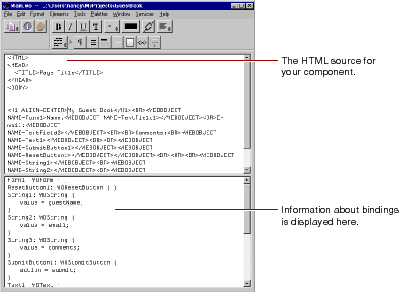

Table of Contents
Table of Contents  Previous Section
Previous Section

As you can see, when you begin with a blank page, WebObjects Builder automatically inserts the necessary elements such as <HTML>, <HEAD>, and <BODY> for you.
The bottom pane shows your declarations (Main.wod) file. When you bind variables to your dynamic elements, this file stores the information. Normally, you don't edit this file directly. "Working With Dynamic Elements" shows how you use WebObjects Builder to create bindings. Refer to the WebObjects Developer's Guide for more information on working with the declarations file.
The Preferences panel provides several options for how text is displayed in both graphical and source editing modes. Choose Tools  Options to bring up the panel. For information on resource-handling preferences, see "Dragging Elements into the Component Window".
Options to bring up the panel. For information on resource-handling preferences, see "Dragging Elements into the Component Window".
Table of Contents  Next Section
Next Section